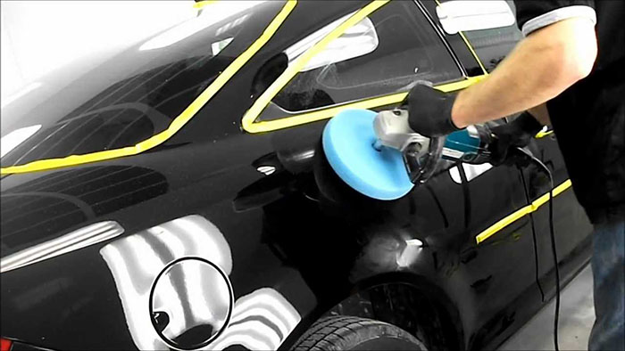
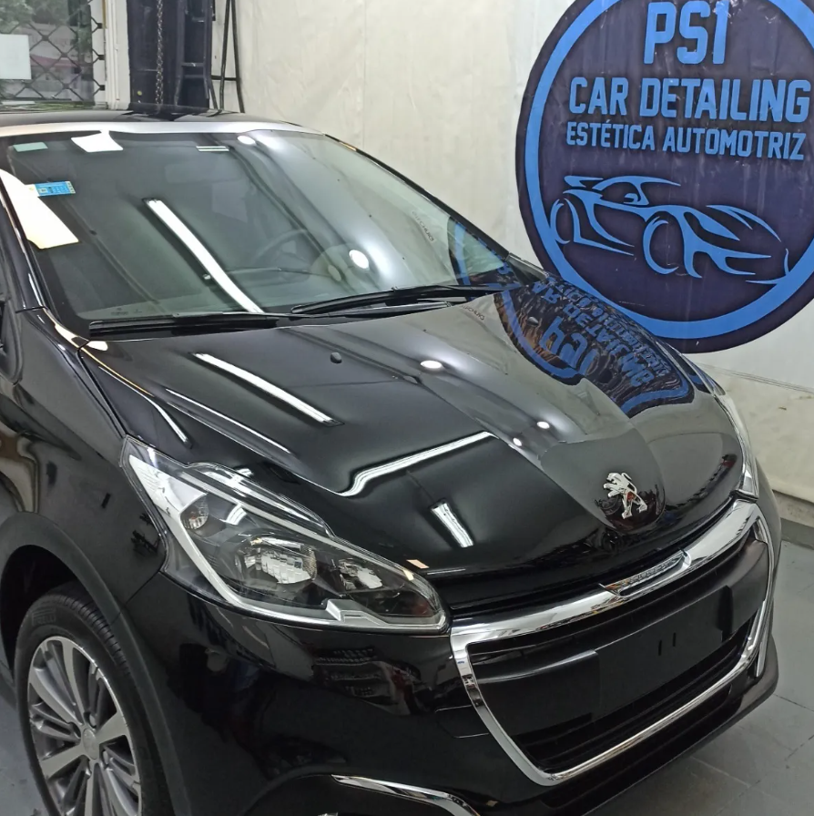

Renault Sandero 5p año 2020 , Azul marino , LLego por la mañana con un marcado desgaste de pintura, Recivio un lavado premium de partede nuestros profesionales.
Se le aplico un pulido especial, en pocas horas este vehiculo parecia recien sacado de la concesionaria, en tan solo un dia volve a disfrutar de tu vechiculo como si fuera la primera vez
Ejemplo 2

Renault Sandero 5p año 2020 , Azul marino , LLego por la mañana con un marcado desgaste de pintura, Recivio un lavado premium de partede nuestros profesionales. Se le aplico un pulido especial, en pocas horas este vehiculo parecia recien sacado de la concesionaria, en tan solo un dia volve a disfrutar de tu vechiculo como si fuera la primera vez
Ejemplo 1

Peugeot 207 , modelo 2019 20.000 kilometros color Negro. LLego por la mañana con un marcado desgaste de pintura, Recivio un lavado premium de partede nuestros profesionales.
Se le aplico un pulido especial, en pocas horas este vehiculo parecia recien sacado de la concesionaria, en tan solo un dia volve a disfrutar de tu vechiculo como si fuera la primera vez